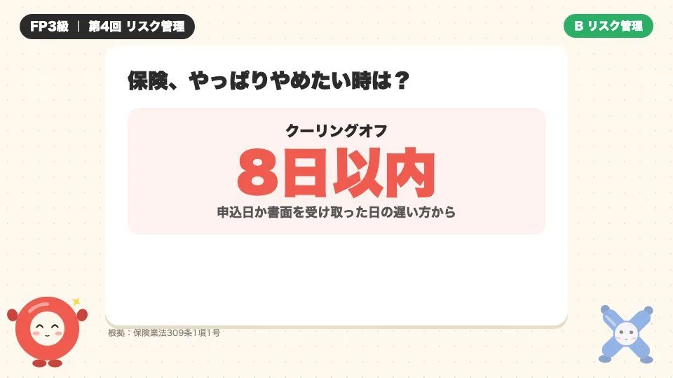
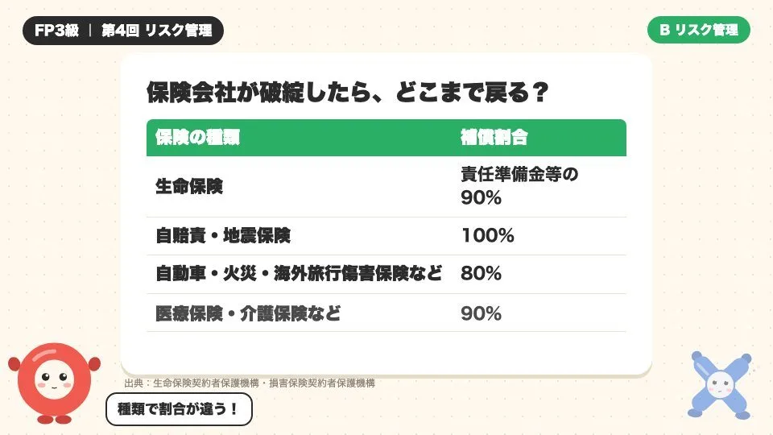
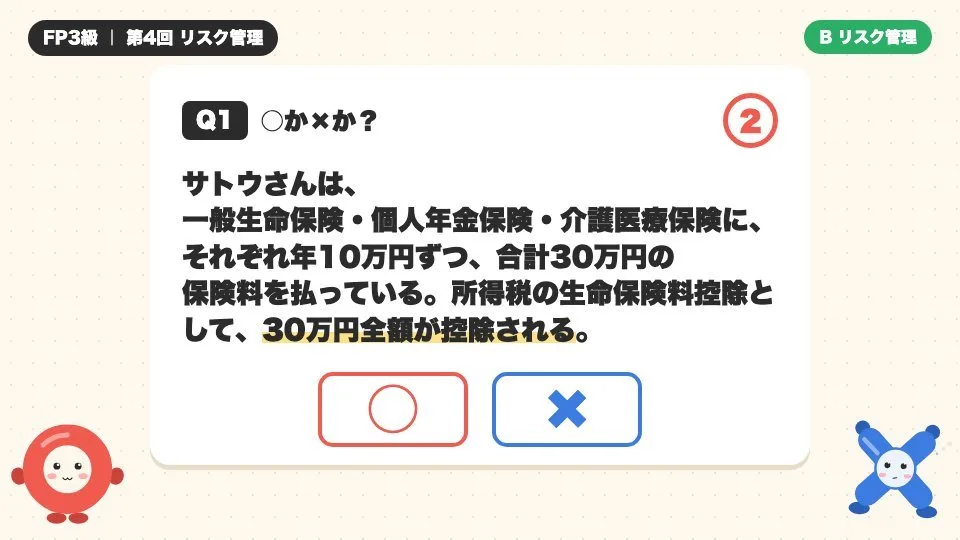
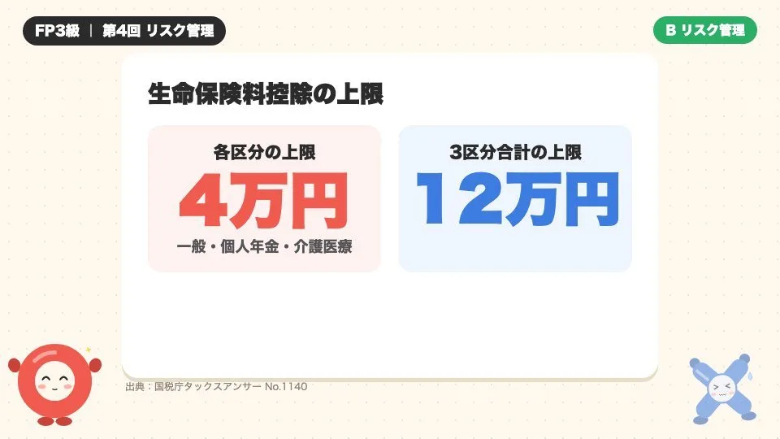
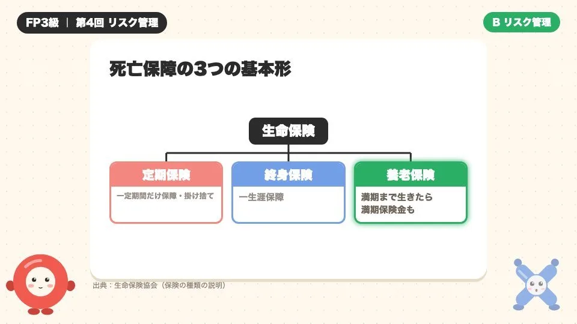
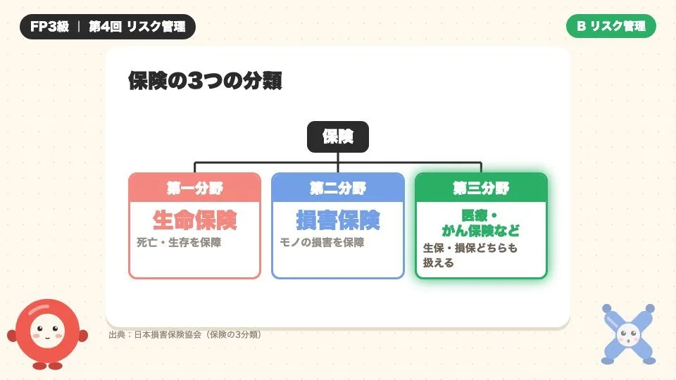
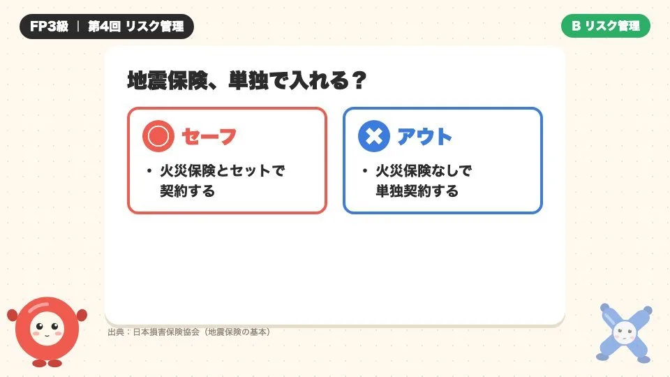
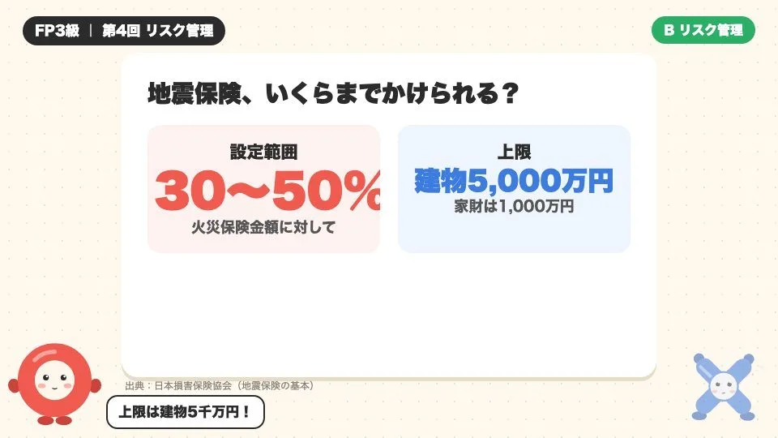
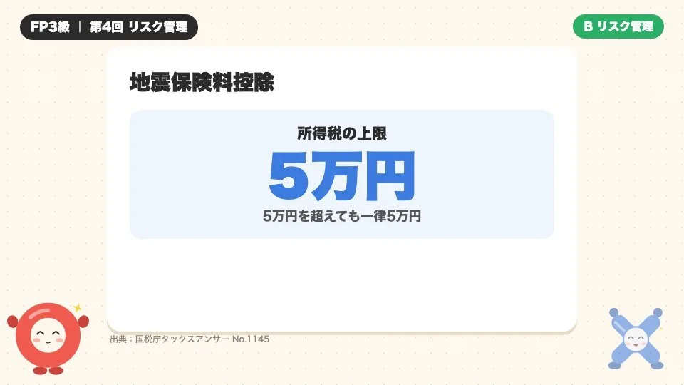
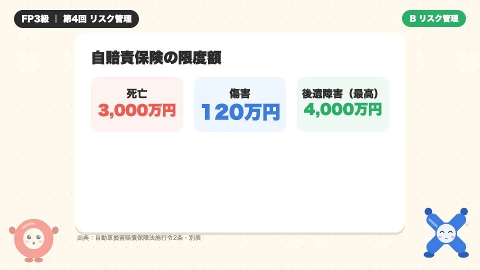

FP3級の試験科目「リスク管理」では、保険会社が破綻したときの補償割合や、地震保険・自賠責保険の限度額がよく問われます。保険会社が破綻しても、自賠責保険と地震保険は積み立てているお金の100%、生命保険は90%まで補償されます。地震保険は火災保険とセットでしか契約できず、上限は建物5,000万円・家財1,000万円です。自賠責保険の限度額は、死亡3,000万円・傷害120万円で、対人の損害だけが対象です。この記事の数字は、11月21日時点で確認したものです。
 ▶ この記事の内容を動画で見る（マルバツ資格塾）
▶ この記事の内容を動画で見る（マルバツ資格塾）
01保険をやめたいときと、保険会社が破綻したときの補償

保険に入ったあとでも、一定期間なら申し込みを撤回できます。クーリングオフができるのは、申込日か、クーリングオフについて書いた書面を受け取った日の、遅いほうから8日以内です。

保険会社が破綻した場合の補償割合は、保険の種類によって異なります。
| 保険の種類 | 補償割合 |
|---|---|
| 生命保険 | 責任準備金等の90% |
| 自賠責保険・地震保険 | 100% |
| 自動車保険・火災保険・海外旅行傷害保険など | 80% |
| 医療保険・介護保険など | 90% |
注意少額短期保険業者が扱う「ミニ保険」は、生命保険契約者保護機構にも損害保険契約者保護機構にも入っていません。加入前に、契約先がどちらの保護機構の対象かを確認してください。
02生命保険料控除の上限は3区分合計12万円

ここで、FP3級でよく出る引っかけ問題を見てみます。一般生命保険・個人年金保険・介護医療保険に、それぞれ年10万円ずつ、合計30万円の保険料を払った場合、所得税の生命保険料控除として30万円全額が控除されるでしょうか。
答えは×です。生命保険料控除には上限があります。

各区分の上限は4万円、一般・個人年金・介護医療の3区分を合計しても上限は12万円です。 そのため、30万円を払っても、控除されるのは12万円までになります。
03死亡保障の3つの基本形と、保険の3つの分類

生命保険の死亡保障には、3つの基本形があります。
- 定期保険一定期間だけ保障する、掛け捨てタイプ
- 終身保険一生涯、保障が続くタイプ
- 養老保険満期まで生きていたら、満期保険金ももらえるタイプ

保険には、第一分野（生命保険）・第二分野（損害保険）・第三分野の3つの分類があります。医療保険やがん保険は、どちらにも属さない第三分野で、生命保険会社・損害保険会社のどちらも扱えます。
04地震保険のルール、単独では入れず上限は建物5,000万円

地震保険は、火災保険とセットでなければ契約できません。 単独では入れない点に注意してください。

地震保険の保険金額は、火災保険の保険金額の30%から50%の範囲で決めます。上限は、建物5,000万円、家財1,000万円までです。

地震保険に加入すると、所得税の地震保険料控除も受けられます。上限は5万円で、年間保険料が5万円を超えても一律5万円です。
05自賠責保険の限度額、対人のみで物損はカバーしない

自賠責保険は、すべての車に加入が義務づけられた強制保険です。限度額は、死亡で3,000万円、ケガの傷害で120万円、後遺障害は重いケースで最高4,000万円です。これは最低ラインの金額で、これを超える損害は任意保険でカバーします。
自賠責保険は、人のケガや死亡だけを対象にしていて、車の修理代など物の損害には使えません。物の損害は、対物賠償保険などの任意保険で補う必要があります。
06よくある質問
保険のクーリングオフはいつまでできる？
申込日か、クーリングオフについて書いた書面を受け取った日の、遅いほうから8日以内です。
保険会社が破綻したら、生命保険はどれくらい戻る？
責任準備金等の90%まで補償されます。自賠責保険と地震保険は100%、自動車保険・火災保険・海外旅行傷害保険などは80%です。
地震保険は火災保険なしで単独で入れる？
入れません。地震保険は、火災保険とセットでなければ契約できません。
自賠責保険は車の修理代もカバーする？
カバーしません。自賠責保険は人のケガや死亡だけが対象で、車の修理代など物の損害は任意保険でカバーします。
07まとめ
結論保険会社が破綻したときの補償割合は保険の種類で異なり、自賠責保険と地震保険は100%、生命保険は90%です。地震保険は火災保険とセットでしか入れず、限度額や控除の上限も、それぞれ決まった数字があります。
- クーリングオフは、申込日か書面受領日の遅いほうから8日以内
- 保険会社破綻時の補償は、生命保険90%、自賠責・地震保険100%、自動車・火災・海外旅行傷害保険など80%、医療・介護保険など90%
- 生命保険料控除の上限は各区分4万円、3区分合計12万円
- 地震保険は火災保険とセットで契約、上限は建物5,000万円・家財1,000万円、地震保険料控除の上限は5万円
- 自賠責保険の限度額は死亡3,000万円・傷害120万円・後遺障害最高4,000万円で、対人の損害だけが対象
FP3級の試験制度や受検料はFP3級の試験のしくみ・費用・日程まとめ、勉強の進め方はFP3級の勉強法、6分野の順番とCBT当日の持ち物で確認できます。